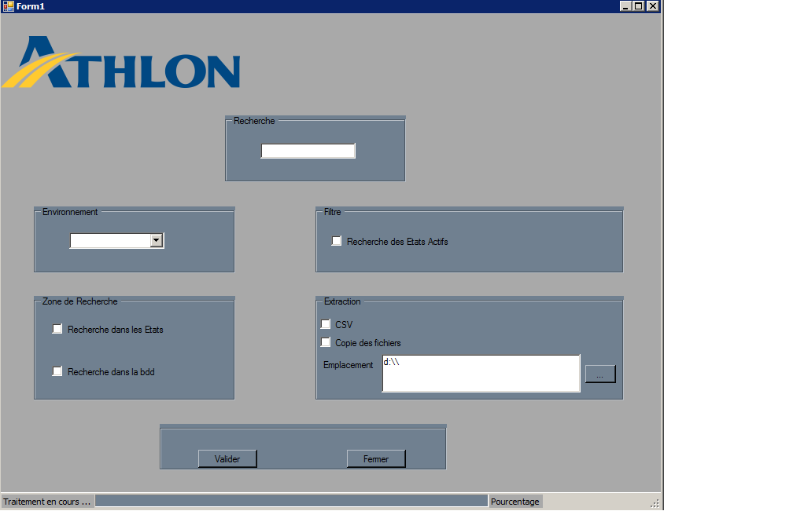
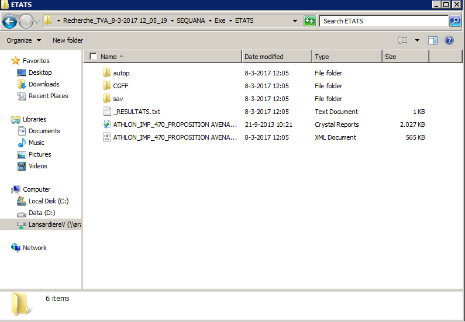

Présentaion : AppReport_Athlon est le nom du projet que j'ai réalisé lors du stage de 2eme année de BTS Slam. Ce projet m'avait été proposé par le service IT de l'entreprise Athlon Car Lease France du Bourget.
Le principe de l'application se résume à pouvoir , à l'aide d'une interface WindowsForm réalisé en C# , rechercher dans des reports et dans des procédures stockées ( dont les chemins d'accès/ connection
sont passés en paramètres dans les ressources du projet) une donnée recherchée.
Afin de pouvoir répondre au besoin proposé par le service IT, je disposais d'une doc d'expression du de besoin que vous pouvez obtenir ci-dessous.
Le projet à été réalisé avec Visual Studio.La solution " AppReport_Athlon" est composée de deux projets
-AppReport_Athlon (entièrement crée par moi)
-RptToXml (fournis par Crystal Report* ).
Le principe technique de l'application se déroule en deux temps . Le premier qui est la récupération des données que l'utilisateur à saisit dans le WindowsForm FormRecherche afin de pouvoir les stocker
dans des variables et ainsi préparer le traitement selon les options choisies. Puis on va appeler la fonction de traitement de la recherche avec les filtres et les options en paramètre.
Le déroulement du processus commence donc dans le FormRecherche. Tout le traitement sera encadré par un background worker afin de donné un aspect visuel de l'avancé du traitement.
Interface de l'application :

Pour le traitement des reports, le framework utilisé pour la création des reports s'appelle *Crystal Report : Crystal Reports est un progiciel d’informatique décisionnelle qui permet de générer une grande variété
de rapports à partir de données informatiques. J'ai donc utilisé la librairie Crystal Report pour mon projet dans laquelle se trouve des methodes qui permettent la convertion du fichier
report en format xml.
Mais Attention cette librairie ne fait que modifier l'intérieur du fichier , son contenu. Le fichier reste donc un ".rpt". Il était donc de ma charge de modifier dynamiquement
l'extension du fichier.
Voici le lien du site ou j'ai trouver la librairie "https://www.tektutorialshub.com/download-crystal-reports-for-visual-studio-2015/"
Voila un rendu visuel du lors du traitement en cours des reports.
